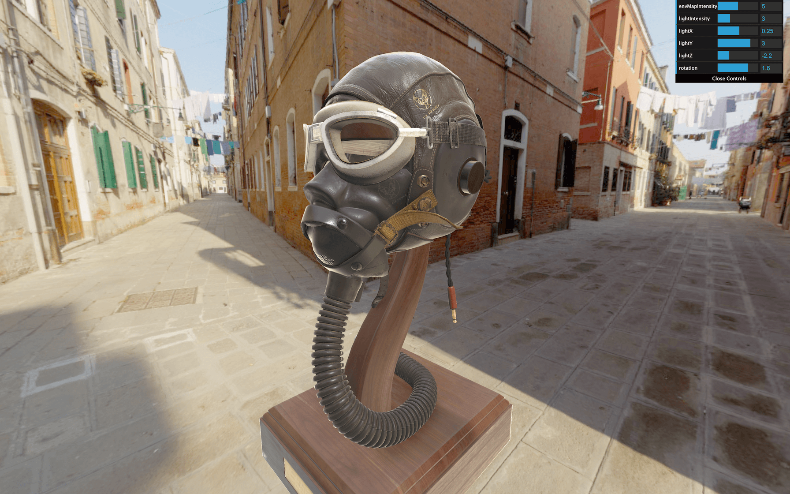

Introduction
When we imported our hamburger in the previous lesson, the colors were off. To put it in a nutshell: many things participate in a wrong looking model.
Sometimes, we want a very realistic render. Maybe it's because we want to showcase a real-life product on our website. Or perhaps we are 3D artists, and we want to show off our work with the best possible result. Anyway, we need a render as real as possible.
In this lesson, we will learn many techniques to improve our model looks once rendered in Three.js. Be careful though, some of those techniques can have a performance impact, and some techniques depend on your model. You'll have to adapt according to the situation.
Setup
We could use our hamburger, but it's better to try a more realistic model with textures, normal maps, etc. We will use the Flight Helmet from the GLTF Sample Models repository. You can find the model in the /static/models/ folder.
This lesson is also the perfect opportunity to revise what we already learned. That is why there isn't much code in the starter. We will have to instantiate the loaders, the lights, the shadows, etc., all by ourselves.
We will also use Dat.GUI to tweak as many parameters as possible. That is required if we want to create the perfect environment.
For now, all we have in our scene is a white sphere and an instance of Dat.GUI.
This sphere is just a placeholder to make sure that the starter is working, but we can use it to set up the lights. Change the material of testSphere to MeshStandardMaterial to see the lights we are about to add:
As you can see, everything has gone black.
Lights
We are going to use only one DirectionalLight. But how can we have a realistic render with only one light? The environment map will do most of the heavy leverage and simulate light bounce. We could get rid of any light, but the DirectionalLight is important if we want to have more control over the lighting but also to create shadows:
Let's add some parameters to our Dat.GUI:
We can now control the position and intensity.
Default Three.js light intensity values aren't realistic. They are based on an arbitrary scale unit and don't reflect real-world values. You could say it doesn't matter, but it's better to base our scene on realistic and standard values. It might be more comfortable to reproduce real-life conditions that way.
To change Three.js lights for more realistic values, switch the physicallyCorrectLights property of the WebGLRenderer instance (the renderer) to true:
Our light appears dimmed. Let's increase its intensity to 3:

Model
Let's load our model instead of that test sphere.
First, instantiate the GLTFLoader. We will regroup the different loaders together. There is no particular reason for that but to regroup things together:
We don't need the DRACOLoader because the model isn't compressed. But if you load a Draco compressed model, instantiate the DRACOLoader as we did in a previous lesson.
We can now load our model located in /static/models/FlightHelmet/glTF/FlightHelmet.gltf:
As always, go slow, make sure that the model is well loaded with no error, and study the imported result.
Because it's a complex model, we will simply add the gltf.scene group to our own scene:
If you can't see it but don't get any error, Remove your testSphere and zoom a little. The explanation is simple: the loaded model is too small.
Increase its scale, move it down a little, and rotate it so it fits our camera view better:
Let's also add a tweak to rotate the whole model in our Dat.GUI:
Environment map
We can't see much of our model because we have only one weak DirectionalLight. As we said previously, the lighting will be taken care of by the environment map.
We already talked about the environment map in the Materials lesson. An environment map is like a photo of the surrounding. It can be a 360 photo or 6 photos that, once put together, compose a cube.
We will use the environment map both for the background and to illuminate our model.
Load the environment map
First, let's load our environment map. There are multiple textures located in the /static/textures/environmentMaps/ folder. We are going to use the first one.
Because these textures are composed of 6 images (a cube), we have to use a CubeTextureLoader.
Add the CubeTextureLoader to our loaders:
Now we can load the textures. The order is positive x, negative x, positive y, negative y, positive z, and negative z.
Add it after creating the scene:
Nothing should have change because we are loading the environment map but we don't use it yet.
Check the logs for potential errors.
Apply the environment map to the background
To add the environment map in our scene's background, we could create a massive cube around the scene, set its face to be visible on the inside, and apply its texture. It should work and looks ok, but instead, let's use a feature included in Three.js.
To apply an environmentMap on a scene, use the cube texture on the Scene's background property. Make sure to do this after creating the environmentMap and the scene:
And that's all. You should see the environment map in the background.
Apply the environment map to the model
One essential feature to get a realistic render is to use our environment map to lighten our model.
We have already covered how to apply an environment map to a MeshStandardMaterial with the envMap property. The problem is that our model is composed of many Meshes. What we can do is use the traverse(...) method available on every Object3D —and classes that inherit from it like Group and Mesh.
Instead of doing it in the success callback function, we will create a updateAllMaterials function that will get handy later. Create this function before the environment map:
Now call it when the model is loaded and added to the scene:
You should see all the children and grand children in the logs.
Instead of logging the children, we want to apply the environment map to each material that should have it.
It would make no sense to apply the environment map to the lights, the camera, the group, etc. We only want to apply the environment map to the Meshes that have a MeshStandardMaterial.
What we can do is test if the child is an instance of THREE.Mesh and if its material is an instance of THREE.MeshStandardMaterial:
We now only log the children that support environment maps. Let's change their envMap property in the material property:
Can't see much of a difference? Increase the envMapIntensity to 2.5:
That's better. We get a nice and realistic lighting.
For more control, let's add the envMapIntensity property to our Dat.GUI. The problem is that we need only one property to tweak, and, when changed, this value should be applied to all children materials.
We can, however, use the debugObject technique as we did in a previous lesson. Right after instantiating Dat.GUI, create a debugObject:
Then, in the environment map code section, add an envMapIntensity property to that object as well as to your Dat.GUI:
We now have the envMapIntensity tweak, but changing the value isn't updating the scene and its children. We should now call the updateAllMaterials function when the tweak value changes and use the debugObject.envMapIntensity value in the updateAllMaterials function:
We can now change all Meshes environment map intensity with only one tweak directly in our debug interface.
Apply the environment map as default
There is an easier way of applying the environment map to all objects. We can update the environment property of the scene just like we changed the background property:
Unluckily, we cannot change the environment map intensity of each material directly from the scene, so we still need our updateAllMaterials function, but it's a perfectly viable solution.
Renderer
Things are getting more and more realistic, but we still feel that it's all fake. We need to work on the colors, and this is a matter of WebGLRenderer properties.
Output encoding
Without going too much into details, the outputEncoding property controls the output render encoding. By default, the value of outputEncoding is THREE.LinearEncoding, which looks ok, but not realistic.
The recommended value for the outputEncoding is THREE.sRGBEncoding:

You should see much brighter textures that will also impact the environment map.
Another possible value is THREE.GammaEncoding. This encoding has the advantage of letting you play on a value called gammaFactor that would act a little like the brightness, but we won't use this one in the lesson.
The Gamma Encoding is a way of storing colors while optimizing how bright and dark values are stored according to human eye sensitivity. When we use the sRGBEncoding, it's like using the GammaEncoding with a default gamma factor of 2.2, which is the common value.
You can find out more about this topic here
- https://www.donmccurdy.com/2020/06/17/color-management-in-threejs/
- https://medium.com/game-dev-daily/the-srgb-learning-curve-773b7f68cf7a
While some might think that GammaEncoding is better than sRGBEncoding because we can control the gamma factor for a darker or brighter scene, this physically doesn't seem right, and we will see how to manage the "brightness" in a better way later.
Textures encoding
You might not have noticed it, but the environment map colors are wrong. They appear grayish and toned down. Even if the effect looks pretty good, it's more satisfying to preserve the right colors.
The problem is that our renderer outputEncoding is THREE.sRGBEncoding, yet the environment map texture is by default THREE.LinearEncoding.
The rule is straightforward. All textures that we can see directly —like the map —should have THREE.sRGBEncoding as encoding, and all other textures — such as normalMap —should have THREE.LinearEncoding.
We can see the environmentMap texture directly, so we have to change its encoding to THREE.sRGBEncoding:
But what about the model textures?
Fortunately, the GLTFLoader implemented this rule, and all the textures loaded from it will have the right encoding automatically.
Tone mapping
The tone mapping intends to convert High Dynamic Range (HDR) values to Low Dynamic Range (LDR) values. HDR is much more than the following interpretation, but you can see that like images where the color values can go beyond 1. It's useful if we want to store light information because light doesn't have intensity limits.
While our assets are not HDR, the tone mapping effect can have a realistic result as if the camera was poorly adjusted.
To change the tone mapping, update the toneMapping property on the WebGLRenderer.
There are multiple possible values:
THREE.NoToneMapping(default)THREE.LinearToneMappingTHREE.ReinhardToneMappingTHREE.CineonToneMappingTHREE.ACESFilmicToneMapping
Test these tone mapping:
To appreciate the difference, let's add the toneMapping to our Dat.GUI. We can create a dropdown tweak by sending an object with different keys and values as the third parameter of gui.add(...):
Unfortunately, changing this tweak will result in a warning in the console, looking likeTHREE.WebGLProgram: Unsupported toneMapping: 3. The problem is a bug with Dat.GUI interpreting the values of the object as a String.
For example, if we use THREE.ReinhardToneMapping, the value behind this constant is 3 as a Number. But once we change the tweak for tone mapping, Dat.GUI will send '3' as a String which will result in the error previously mentioned.
We can fix that by converting the value to a Number in the change event callback:
Changing the tone mapping should work. Nevertheless, if you watch closely, you'll see that the tone mapping changed for the environment map in the background, but not for the model itself.
We need to find a way to tell the materials that they need to be updated and we already did that in the updateAllMaterials function. What we can do is call this function right after changing the toneMapping:
The materials should also update when changing the tone mapping.
We can also change the tone mapping exposure. You can see that like how much light we let in and the algorithm will handle it its way. To change this value, we must update the toneMappingExposure property directly on the renderer:
Let's add it to Dat.GUI as well:
Feel free to choose your favorite toneMapping for the rest of the lesson, but here we will go for THREE.ReinhardToneMapping.
Antialiasing
We call aliasing an artifact that might appear in some situations where we can see a stair-like effect, usually on the edge of geometries.
Our model isn't subject to that problem because there is a lot of details, but if you have a screen with a pixel ratio of 1. Look at the edges —especially the bright ones— rotate the camera slowly, and you might see the problem:
It's a well-known problem. When the rendering of a pixel occurs, it tests what geometry is being rendered in that pixel. It calculates the color, and, in the end, that color appears on the screen.
But geometry edges are usually not perfectly aligned with vertical lines and horizontal lines of pixel of your screen and this is why you get this stair-like artifact named aliasing.
There are many ways of fixing that problem, and developers have been struggling with it for many years.
One easy solution would be to increase our render's resolution, let's say to the double. When resized to it's normal-sized, each pixel color will automatically be averaged from the 4 pixels rendered.
This solution is called super sampling (SSAA) or fullscreen sampling (FSAA), and it's the easiest and more efficient one. Unfortunately, that means 4 times more pixels to render, which can result in performance issues.
The other solution is called multi sampling (MSAA). Again, the idea is to render multiple values per pixel (usually 4) like for the super sampling but only on the geometries' edges. The values of the pixel are then averaged to get the final pixel value.
The most recent GPU can perform this multi sampling anti-aliasing, and Three.js handles the setup automatically. We just need to change the antialias property to true during the instantiating — and not after:
Those aliasing artifacts should be gone now.
Using the antialias exhausts some resources. As we said earlier, screens with a pixel ratio above 1 don't really need antialias. One right way to do this would be to activate it only for screens with a pixel ratio below 2. We will see how to achieve that in a future lesson, along with other optimizations.
Shadows
The final touch for a realistic render is to add shadows. First, toggle the shadows on WebGLRenderer. Then, change the shadow type to THREE.PCFSoftShadowMap as we did in the Shadows lesson:
Activate it on the DirectionalLight:
We also need to set the camera that handles the shadow for this light.
Add a CameraHelper to the directionalLight.shadow.camera:
We can now see accurately what the shadow camera will render. The box should already fit pretty nicely with the scene. Let's reduce the far value:
We can remove or comment the directionalLightCameraHelper.
As we want realistic and precise shadows and because we have only one light, we can increase the shadow map size to 1024x1024 without fearing a frame rate drop.
Finally, we can activate the shadows on all the Meshes of our model. As we are already traversing the scene in the updateAllMaterials function, let's simply activate both castShadow and receiveShadow on all the children:
You should now observe an accurate shadow, mostly on the wood base and inside the model.
Final tweaks
Now that we have everything in place, we can tweak the values, make sure the directionalLight corresponds to the light in the environment map, try other environment maps, test different tone mappings, add animation, etc.
It's up to you. Take your time, stop looking at your render, and look around because you need real-life markers, make sure your screen colors are good, maybe show your work to your friends to get an external point of view until everything is correctly set.
Hamburger
Let's try with our hamburger. A version is already located in /static/models/hamburger.glb.
This file isn't Draco compressed. If you are using your model, make sure it's not compressed or add the DRACOLoader to the GLTFLoader as we did in the Imported Model lesson.
Replace the path to load the hamburger and change the scale and position:
Your hamburger appears, but some nasty strips cover its surface.

No we didn't let the hamburger burn on the grill.
These artifacts are called shadow acne. Shadow acne can occur on both smooth and flat surfaces for precision reasons when calculating if the surface is in the shadow or not. What's happening here is that the hamburger is casting a shadow on its own surface.
We have to tweak the light shadow's bias and normalBias properties to fix this shadow acne.
The bias usually helps for flat surfaces. It's not our case here, but if you have the problem on flat surfaces, try to increase the bias slightly until the acne disappears.
The normalBias usually helps for rounded surfaces, which is our case. Let's increase it until the shadow acne is barely visible:
Now you get a very decent, acne-free hamburger.
Bon appétit.